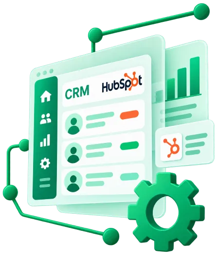

◈
Implementación de HubSpot CRM
Organizamos propiedades, contactos, empresas y negocios para adaptar el CRM a tu pyme.

Consulta la ubicación y las opiniones publicadas en nuestra ficha.
Configuramos HubSpot CRM según tu proceso comercial, conectamos los datos y ayudamos a tu equipo a utilizarlo en el día a día.
Organizamos propiedades, contactos, empresas y negocios para adaptar el CRM a tu pyme.
Preparamos e importamos datos desde hojas de cálculo y otras herramientas, revisando formatos y duplicados.
Configuramos etapas, tareas y vistas para que el equipo conozca el estado de cada oportunidad.
Diseñamos avisos, asignaciones y acciones recurrentes según las funciones disponibles en tu plan.
Conectamos formularios, correo y otras aplicaciones para reducir la entrada manual de información.
Preparamos a tu equipo para registrar actividad, consultar informes y mantener los datos actualizados.
Más contexto.
Menos tareas.
Mejores relaciones.
Centraliza la información que antes buscabas en distintas herramientas.
Ventas y atención al cliente trabajan con registros más accesibles.
Establece procesos para actualizar los contactos y reducir duplicidades.
Utiliza paneles e informes para dar seguimiento a la actividad comercial.
Partimos de tu forma de trabajar y avanzamos con una configuración útil para tu equipo.
Revisamos cómo captas, gestionas y atiendes a tus clientes.
Diseñamos campos, etapas, permisos e integraciones necesarias.
Configuramos HubSpot y comprobamos los recorridos principales.
Explicamos el uso y revisamos los ajustes tras la puesta en marcha.
Reserva una conversación de 30 minutos para contarnos qué herramientas utilizas y qué quieres mejorar en tu proceso comercial.
Abrir calendario en otra ventana ↗Explícanos cómo gestionas actualmente los clientes, cuántas personas utilizan el CRM y qué te gustaría automatizar.
Teléfono de atención: +34 910 05 40 12
En CrmActiva ayudamos a pequeñas y medianas empresas a organizar su actividad comercial mediante la implementación y configuración de HubSpot CRM. Adaptamos el sistema a la forma de trabajar de cada equipo y definimos qué información necesita registrar.
Podemos preparar migraciones de contactos y empresas, configurar las etapas del embudo de ventas e integrar formularios o herramientas que ya utilizas. También diseñamos automatizaciones según las posibilidades de la suscripción contratada y acompañamos al equipo en el uso diario del CRM.
Trabajamos desde Madrid con empresas de toda España. Si tu información está repartida entre correos, hojas de cálculo y distintas aplicaciones, podemos estudiar contigo cómo centralizarla y establecer un seguimiento comercial más organizado.